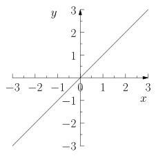
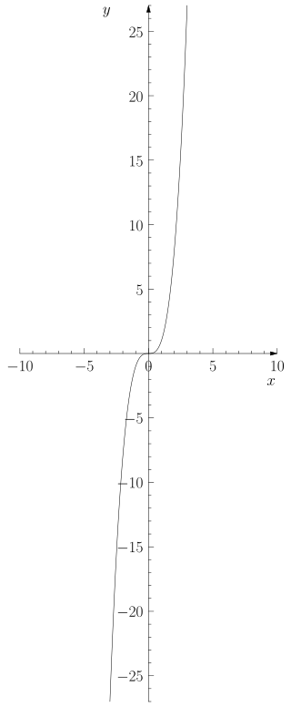
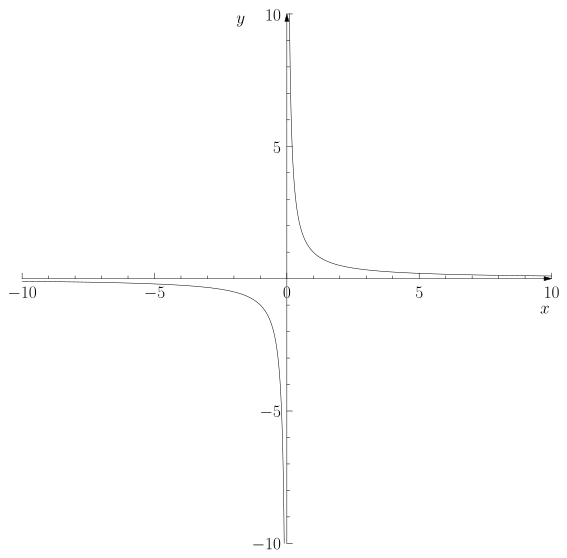
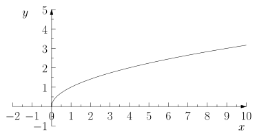
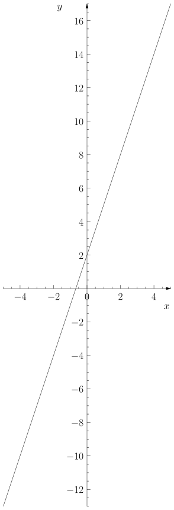
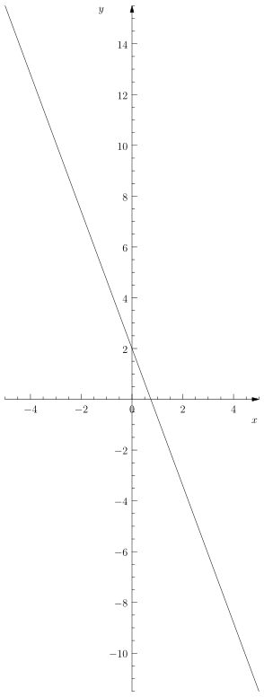

Fonctions
Table of Contents
- 1. Disclaimer
- 2. Récapitulatif sur la notion de fonction
- 3. Représentation des fonctions usuelles
- 4. Variations d’une fonction
- 5. Position relative de courbe
- 6. Résolution d’équation \(f(x) = k\)
#+Author :
1. Disclaimer
Le cours suivant ne suit peut-être pas exactement le cours donné en classe. Néanmoins, le contenu est le même, il n’y a que l’ordre qui est légèrement changé.
2. Récapitulatif sur la notion de fonction
On considère des fonctions numériques, c’est-à-dire des fonctions qui associent à des nombres d’autres nombres.
2.1. Vocabulaire
2.1.1. L’image d’une fonction
Soit \(x\) un nombre réel. On appelle \(f(x)\) l’image du nombre \(x\) par la fonction \(f\). Autrement dit : \[f : x \longmapsto f(x)\]
On désigne les fonctions par des lettres, comme \(f\). À l’inverse l’image d’une fonction par un nombre \(x\) est notée \(f(x)\)
Donc, on fera la distinction entre \(f(x)\), qui est un nombre, et \(f\), qui désigne une fonction.
2.1.2. Antécédent d’une fonction
L’antécédent de \(y\) est un nombre \(x\) tel que \(f(x) = y\).
Il faut donc retenir qu’une fonction associe à un nombre son image. Pour une image donnée, on peut retrouver l’ensemble des nombres qui ont cette image par une fonction, on les appelle les antécédents.
Schématiquement, on peut donc retenir : \[ \textrm{antécédent} \mapsto \textrm{image} \]
2.1.3. Courbe représentative
Pour représenter une fonction, on place les antécédents sur la courbe des abscisses et les images sur l’axe des ordonnées.
On appelle courbe représentative d’une fonction l’ensemble des points du plan ainsi formé
Un nombre ne peut avoir qu’une seule image par une fonction, mais une image peut avoir plusieurs antécédents.
3. Représentation des fonctions usuelles
3.1. Fonctions paires, fonctions impaires
Une fonction est dite paire si sa courbe représentative présente une symétrie axiale par rapport à l’axe des ordonnées.
Une fonction est dite impaire si sa courbe représentative présente une symétrie centrale, de centre l’origine du repère.
Il existe des fonctions qui ne sont ni paires, ni impaires.
3.2. La fonction identité
La fonction identité est la fonction qui associe a \(x\) le nombre réel \(x\). C’est-à-dire qu’elle associe à un nombre ce nombre lui-même.

La courbe représentative de la fonction identité est une droite. Cette droite passe par l’origine du repère, puisque l’image de \(0\) par la fonction identité est \(0\).
Tous les points de la courbe représentative de la fonction identité sont de la forme \((x; x)\).
La fonction identité est une fonction impaire.
3.3. La fonction carré
3.3.1. Définition
La fonction carre est la fonction qui associe à tout réel \(x\) positif ou nul le nombre \(x^{2}\). Autrement dit,
\begin{align*} f : x \mapsto x^{2} \end{align*}3.3.2. Représentation graphique
Sa courbe représentative est une parabole. Cette parabole passe par l’origine du repère, puisque l’image de \(0\) par la fonction identité est \(0\).
Tous les points de la courbe représentative de la fonction identité sont de la forme \((x; x²)\)
3.4. La fonction cube
3.4.1. Définition
La fonction cube est la fonction qui associe à tout réel \(x\) positif ou nul le nombre \(x^{3}\). Autrement dit,
\begin{align*} f : x \mapsto x^{3} \end{align*}3.4.2. Représentation graphique

Cette courbe passe par l’origine du repère, puisque si on appelle \(f\) la fonction cube, on a \(f(0) = 0\), donc l’image de \(0\) par la fonction \(f\) est bien \(0\).
Tous les points de la courbe représentative de la fonction cube sont de la forme \((x; x^{3})\)
La fonction cube est une fonction impaire.
3.5. La fonction inverse
3.5.1. Définition
La fonction inverse est la fonction qui associe à tout réel \(x\) positif ou nul le nombre \(\frac{1}{x}\). Autrement dit,
\begin{align*} f : x \mapsto \frac{1}{x} \end{align*}3.5.2. Représentation graphique

La courbe représentative de la fonction inverse est une hyperbole.
Cette courbe ne passe par l’origine, puisque l’image de \(0\) par cette fonction n’est pas définie. Tous les points de la courbe représentative de la fonction inverse sont de la forme \((x; \frac{1}{x})\)
La fonction inverse est une fonction impaire.
3.6. La fonction racine carrée
3.6.1. Définition
La fonction racine carré est la fonction qui associe à tout réel \(x\) positif ou nul le nombre \(\sqrt{x}\). Autrement dit,
\begin{align*} f : x \mapsto \sqrt{x} \end{align*}3.6.2. Représentation graphique

La courbe de la fonction racine carrée passe par l’origine du repère, puisque si on appelle \(f\) la fonction racine carrée, on a \(f(0) = 0\).
Tous les points de la courbe représentative de la fonction racine carrée sont de la forme \((x; \sqrt{x})\)
La fonction racine carrée est une fonction qui n’est \textbf{ni paire, ni impaire}.
La courbe représentative de la fonction racine carrée est exactement la même courbe que la demie-parabole de la fonction carré (la partie à gauche des ordonnées) qui a subi une rotation de \(90\) dans le sens horaire,
- \(f(0) = \sqrt{0} = 0\)
- \(f(4) = \sqrt{4} = 2\) car le carré de \(2\) est \(4\)
- \(f(2) = \sqrt{2} \approx 1.4142\)
- \(f(9) = \sqrt{9} = 3\) car le carré de \(3\) est \(9\)
- \(f(-1)\) n’existe pas ! car \(-1\) est plus petit que \(0\)
3.7. Les fonctions affines
3.7.1. Fonctions affines avec coefficient positif

La fonction identité est une fonction affine avec un coefficient positif particulière (le coefficient est égal à \(1\), et l’ordonnée à l’origine est nulle).
3.7.2. Fonctions affines avec coefficient négatif

La courbe représentative des fonctions affines ou linéaires est une droite. Inversement, toutes droites dans un rèpère, représente une fonction affine (sauf pour les droites qui sont parfaitement verticale, autrement dit parallele à l’axe des ordonnées).
Tous les points de la courbe représentative d’une fonction affine sont de la forme \((x; a \times x + b)\)
Les fonctions affines ne sont ni paires, ni impaires dès que \(a \not = 0\)
4. Variations d’une fonction
4.1. Intervalle
Un intervalle désigne un ensemble de nombre réel. On distingue les intervalles ouverts des intervalles fermés lorsque l’on veut exclure ou non les extrémités.